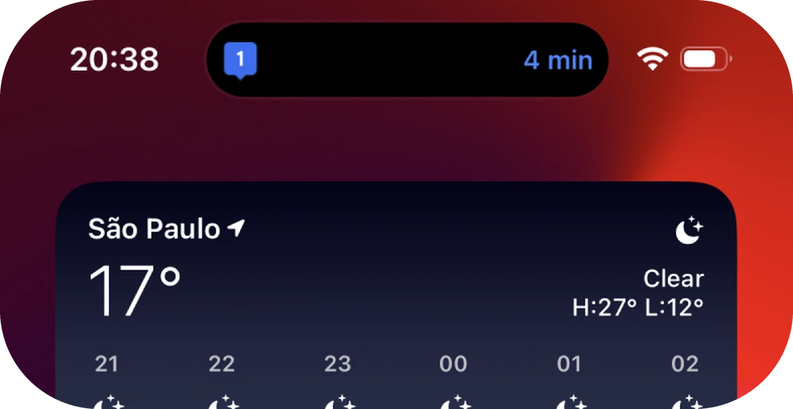
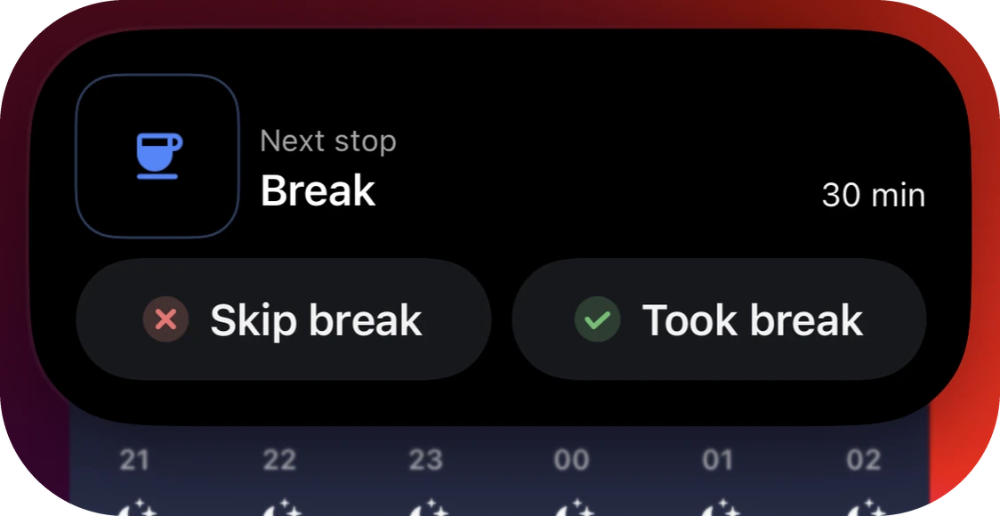
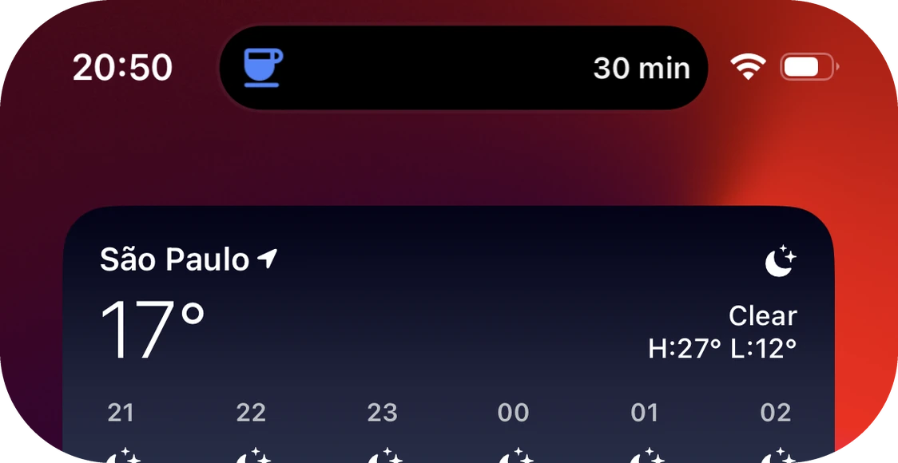
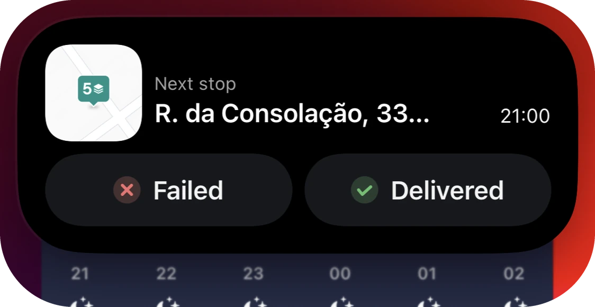
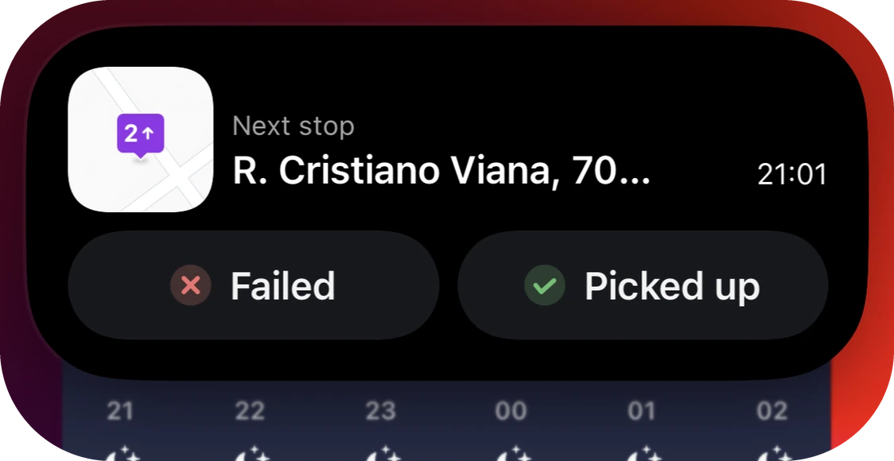
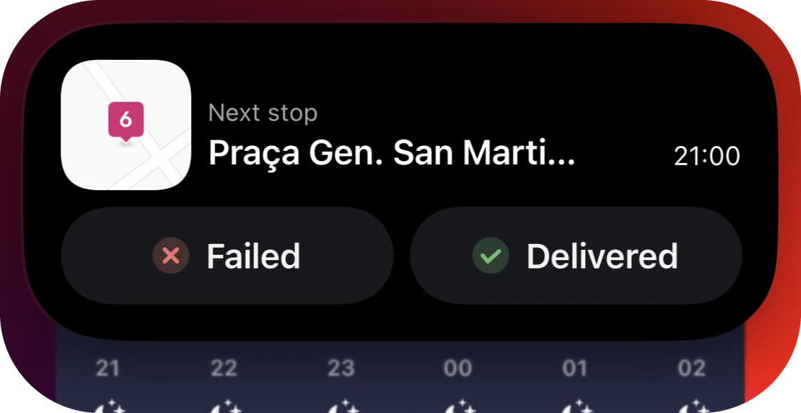
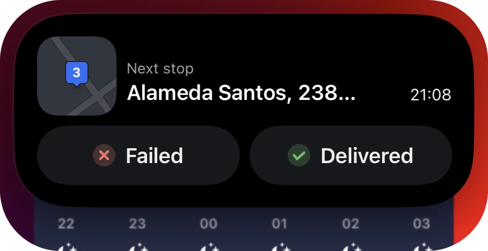
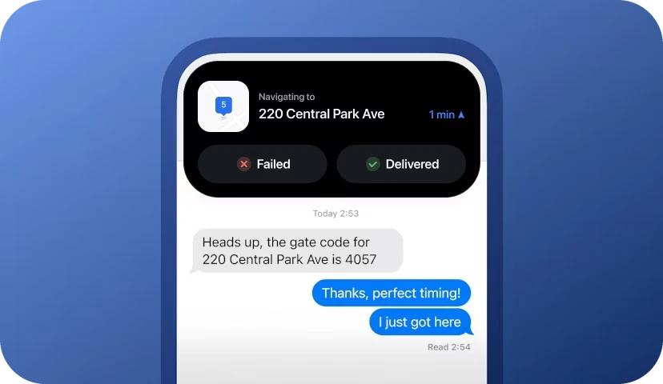

Dynamic Island Feature
Drivers using iOS can now easily multitask during their routes.
Good example of a feature that uses a new technology and brings a delightful experience to the users.
Opportunity
Offer a delightful experience for iOS users by experimenting with new technologies and design patterns.
Improve relationship with Apple by making Circuit’s app more functional inside their system.
Minimize app
A dynamic island that displays key information about the driver’s next stop after they minimize Circuit’s app.
Navigating to a stop
Driver sees a live ETA if they are currently navigating to a stop.

Marking a stop as done
Drivers can mark stops as delivered or failed directly from the island. There’s an animation that confirms the action and moves to the next stop.
Breaks
If the next stop is a break, a different island will appear, allowing drivers to mark the break as taken or failed.


Marking a route as complete
At the end of the route, the island displays a button to complete it without reopening the app. Pressing the button will automatically close the island.
Live pins
Drivers can configure stop pins in the app, such as its colors or if it’s a deliver or pickup. Those configurations are always reflected in the island.



Map
The initial goal was to display a live map, but performance issues led to using a generic image instead. There are light and dark versions to match the running app.

Live activities
The dynamic island widget also functions as a live activity, keeping drivers informed about their route even when the phone is locked.
Highlights
- Designing this was a big challenge due to the layout constraints for the dynamic island.
- I’ve experimented it with code to understand it better.
Impact
Highlighted on the App Store which increased awareness of Circuit’s app.
